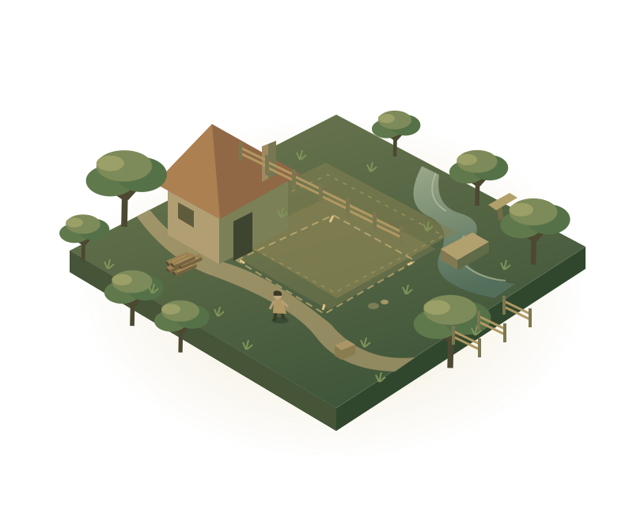

EINE WELT. DEIN LEBEN.
IMPERATHEN
CHRONIK EINES UNGESCHRIEBENEN LEBENS
◆
Reiche werden nicht geboren.
Menschen schon.
Ein Anfang ohne Rang. Ein Weg, den du bestimmst.
DER ERSTE MORGEN
Erste spielbare Skizze: drei Handlungen und ein gespeicherter Lebensanfang. Die begehbare Welt entsteht im nächsten Entwicklungsschritt.

AM RAND EINES GROSSEN REICHES
Andere beginnen mit nichts.